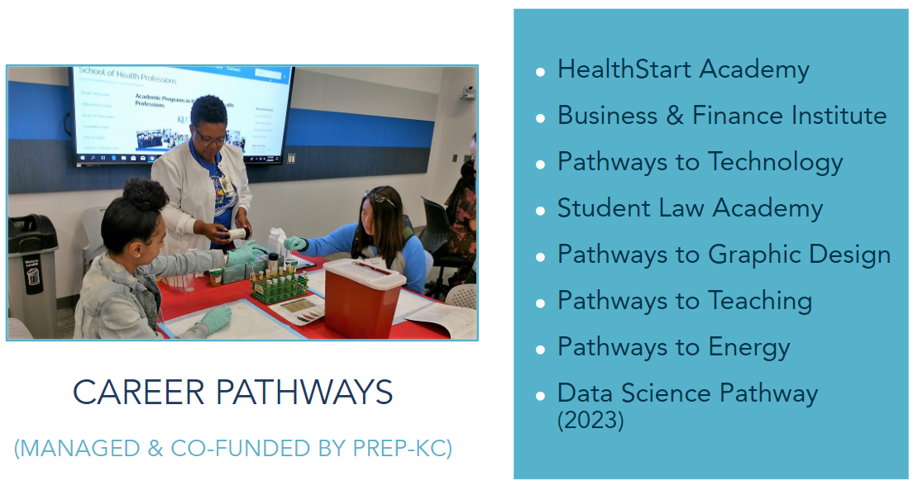

Academic and Essential Skills Foundation
Math Relays

Data Science Initiative

Empowering students from Kansas City’s urban schools with pathways to meaningful careers. PREP-KC helps ensure that students attending our region’s urban schools have equal access to the knowledge, opportunities, and experiences they need to pursue meaningful careers. We implement unique, hands-on strategies that allow 3rd through 12th-grade students to explore college and careers through hands-on, real-world opportunities.